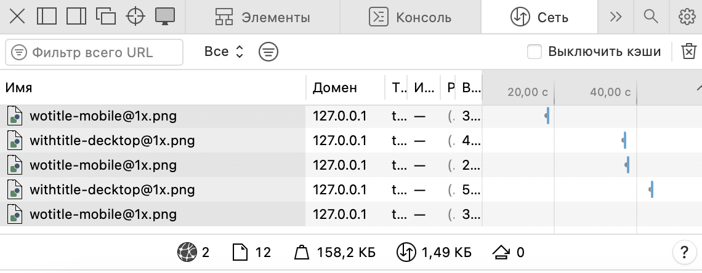

Тег picture позволяет намного гибче работать с изображениями на сайте. Обычно когда мы хотим вставить картинку на сайт мы используем тег <img> и прописываем путь к картинке src="".
Например, чтобы встaвить логотип на сайт мы прописываем:
<img src=″withtitle.png″ alt=″chanel_logo″ title=″chanel_logo″>
и получаем такой логотип:
Но что, если данный логотип на мобильном устройсве нужно сделать немного другим. То есть из такого логотипа нужно сделать к примеру такой:

Иными словами просто показывать иконку без текста. В данном случае рационально использовать тег picture.
Обязательным условием использования этого тега будет наличие тега <img> и <source>. В теге <source> используем атрибут media(такой же как и в css), укажем параметры и данная картинка
будет подгружаться тогда, когда ширина, к примеру, будет меньше, чем это значение. Пропишем код:
<picture>
<source srcset =″wotitle-mobile@1.png″ media=″(max–width:575px)″>
<img src=″withtitle-mobile@1.png″ alt=″chanel_logo″ title=″chanel_logo″>
<⁄picture>
На данном этапе попробуем сузить окно нашего браузера,и когда ширина достигнет значения меньше 575px(до мобильно версии, о чем говорилось изначально) логотип с именем измениться на лого без.
Браузер видит этот медиа запрос и подставляет в нужный момент тот логотип, какой нужно показывать
Если мы откроем программный код страницы и сеть, то увидим какой логотип подгружается при заданных параметрах. Браузер сам понимает, что ему нужно подгружать
